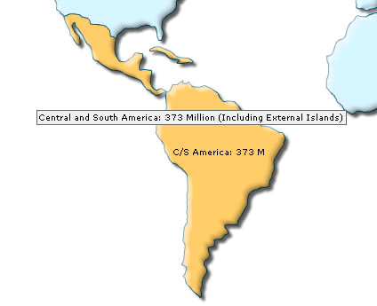
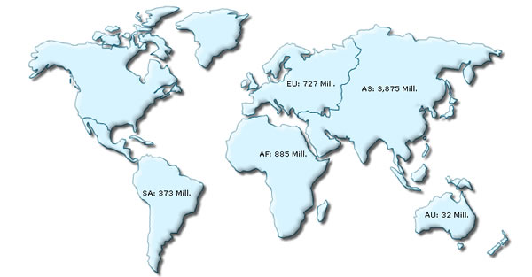
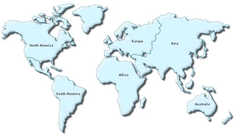

| Showing Custom Labels and tool tips for entities |
You can show custom labels and tool tips for any entity on the map. To do so, just add the following to XML: |
<map borderColor='005879' fillColor='D7F4FF'
numberSuffix=' Mill.' includeValueInLabels='1' labelSepChar=': ' baseFontSize='9'>
<data>
<entity id='NA' value='515' />
<entity id='SA' value='373' displayValue='C/S America: 373 M' toolText='Central and South America: 373 Million (Including External Islands)'/>
<entity id='AS' value='3875' />
<entity id='EU' value='727' />
<entity id='AF' value='885' />
<entity id='AU' value='32' />
</data>
</map> |
Here, we've added out custom display value (label) and tool text for South America Entity. When you view the map, you'll get the following output:  |
| Hiding an entity's name |
|
To hide an entity's name just set its displayValue as a blank space. Example: |
<map borderColor='005879' fillColor='D7F4FF' numberSuffix=' Mill.' includeValueInLabels='1' labelSepChar=': ' baseFontSize='9'> <data> <entity id='NA' value='515' displayValue=' '/> <entity id='SA' value='373' /> <entity id='AS' value='3875' /> <entity id='EU' value='727' /> <entity id='AF' value='885' /> <entity id='AU' value='32' /> </data> </map> |
|
In the above example, we've hidden the label of North America by setting its displayValue attrbute to a blank space. When you view this map, you'll get the following results: |
|  |
|
Note that North America is without any label now, though the tool tip will still function over it. |
| Showing full labels and hiding the values |
|
To show full labels and hide the values on the map, use: |
|  |
Now that we've played enough with the configuration options of the map, let's shift to the one of the most important aspects of FusionMaps XT - defining range based data and colors for better visual interpretation. |